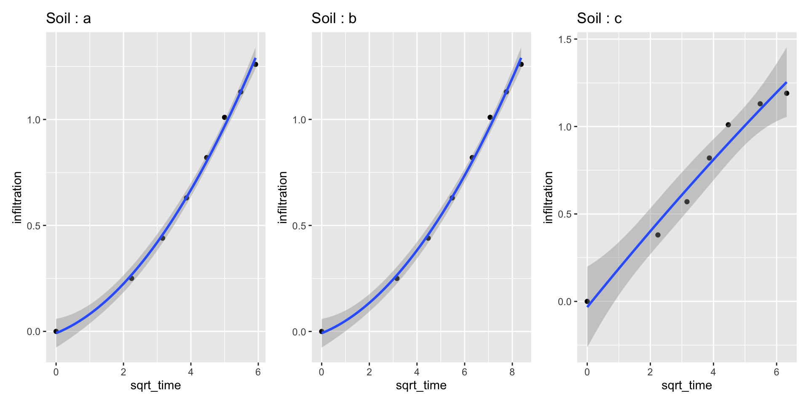

[1] 2Soil Biophysics Lab
In this session:
The presentations contain actual R code (can be copied and pasted directly). This repository will contain the material and content for this session.
The repository is here:
infiltrodiscR:: needs:infiltrodiscR:: functionsinfiltration() This function calculates cumulative infiltration and the square root of time, using time and volume recorded.
vg_par This function returns the parameter A, no_h and alpha related to the van Genuchten parameters (van Genuchten, 1980), from tabulated data calculated for a radius of 2.25 cm, including 12 soil texture classes and suctions from -0.5 cm to -7 cm. Data from (Decagon Devices, Inc., 2005)
infiltrodiscR:: functionsparameter_A This function returns the parameter A calculated from the equation proposed by Zhang (1997)
Let’s load some data
library(tidyverse)
library(fs)
library(kableExtra)
info_soils <- read_csv("data_suelos/info_suelos.csv")
csv_data <- dir_ls("data", regexp = "\\.csv$")
data_infiltration <-
csv_data %>%
map_dfr(read_csv, .id = "source") %>%
mutate(source = str_sub(source, start = 12, end = -5)) %>%
rename(soil = source)Three columns: soil ID, time and volume
Now the infiltration data will be nested:
Each soil (or measurement or location) has its infiltration data nested
Now we need information about soil texture (USDA) and tension
data_infiltration_all <-
data_infiltration_nested %>%
left_join(info_soils, by = join_by(soil == suelo))
data_infiltration_all# A tibble: 3 × 7
# Groups: soil [3]
soil data sand silt clay suction texture
<chr> <list> <dbl> <dbl> <dbl> <chr> <chr>
1 a <tibble [8 × 2]> 40 40 20 2cm silt loam
2 b <tibble [8 × 2]> 20 30 50 2cm clay
3 c <tibble [7 × 2]> 70 20 10 3cm sandy loamFirst, we use the infiltration() function
library(infiltrodiscR)
data_infiltration_all %>%
mutate(data = map(data, ~ infiltration(.), data = .x)) %>%
unnest(data) # let's check the data nested created# A tibble: 23 × 11
# Groups: soil [3]
soil time volume sqrt_time volume_infiltrated infiltration sand silt
<chr> <dbl> <dbl> <dbl> <dbl> <dbl> <dbl> <dbl>
1 a 0 93 0 0 0 40 40
2 a 5 89 2.24 4 0.25 40 40
3 a 10 86 3.16 7 0.44 40 40
4 a 15 83 3.87 10 0.63 40 40
5 a 20 80 4.47 13 0.82 40 40
6 a 25 77 5 16 1.01 40 40
7 a 30 75 5.48 18 1.13 40 40
8 a 35 73 5.92 20 1.26 40 40
9 b 0 95 0 0 0 20 30
10 b 10 91 3.16 4 0.25 20 30
# ℹ 13 more rows
# ℹ 3 more variables: clay <dbl>, suction <chr>, texture <chr>Let’s check the var_par() function
# A tibble: 3 × 7
# Groups: soil [3]
soil data suction texture alpha n_ho value_A
<chr> <list> <chr> <chr> <dbl> <dbl> <dbl>
1 a <tibble [8 × 2]> 2cm silt loam 0.02 1.41 7.93
2 b <tibble [8 × 2]> 2cm clay 0.008 1.09 4.30
3 c <tibble [7 × 2]> 3cm sandy loam 0.075 1.89 3.93The hydraulic conductivity of the soil K at a specific suctions is calculated as: K(h) = C1 / A. Parameter C1 is calculated fitting a polynomial function of the second degree (y = ax2+b), where a is parameter C1, x is the square root of time and y is the cumulative infiltration. For this step, we use the package broom and base R.
Here we use lm(poly) to get a polynomial regression
library(broom)
data_infiltration_all %>%
mutate(data = map(data, ~ infiltration(.), data = .x)) %>%
vg_par() %>%
mutate(
fit = map(data, ~ lm(infiltration ~ poly(sqrt_time, 2, raw = TRUE), data = .x)),
tidied = map(fit, tidy)
) # A tibble: 3 × 12
# Groups: soil [3]
soil data sand silt clay suction texture alpha n_ho value_A fit
<chr> <list> <dbl> <dbl> <dbl> <chr> <chr> <dbl> <dbl> <dbl> <list>
1 a <tibble> 40 40 20 2cm silt loam 0.02 1.41 7.93 <lm>
2 b <tibble> 20 30 50 2cm clay 0.008 1.09 4.30 <lm>
3 c <tibble> 70 20 10 3cm sandy loam 0.075 1.89 3.93 <lm>
# ℹ 1 more variable: tidied <list>The coefficients are unnested and only “a” (or C1) are filtered
data_infiltration_all %>%
mutate(data = map(data, ~ infiltration(.), data = .x)) %>%
vg_par() %>%
mutate(
fit = map(data, ~ lm(infiltration ~ poly(sqrt_time, 2, raw = TRUE), data = .x)),
tidied = map(fit, tidy)
) %>%
unnest(tidied) %>%
filter(term == "poly(sqrt_time, 2, raw = TRUE)2") # to filter "a" which = C1# A tibble: 3 × 16
# Groups: soil [3]
soil data sand silt clay suction texture alpha n_ho value_A fit
<chr> <list> <dbl> <dbl> <dbl> <chr> <chr> <dbl> <dbl> <dbl> <list>
1 a <tibble> 40 40 20 2cm silt loam 0.02 1.41 7.93 <lm>
2 b <tibble> 20 30 50 2cm clay 0.008 1.09 4.30 <lm>
3 c <tibble> 70 20 10 3cm sandy loam 0.075 1.89 3.93 <lm>
# ℹ 5 more variables: term <chr>, estimate <dbl>, std.error <dbl>,
# statistic <dbl>, p.value <dbl>final_calculations <-
data_infiltration_all %>%
mutate(data = map(data, ~ infiltration(.), data = .x)) %>%
vg_par() %>%
mutate(
fit = map(data, ~ lm(infiltration ~ poly(sqrt_time, 2, raw = TRUE), data = .x)),
tidied = map(fit, tidy)
) %>%
unnest(tidied) %>%
filter(term == "poly(sqrt_time, 2, raw = TRUE)2") %>% # to filter "a" which = C1
rename(C1 = estimate) %>%
parameter_A() %>% # function to calculate A (not from the table)
mutate(K_h = C1 / parameter_A) # finally the value of K!Because data is nested, it is possible also iterate plots
Because data is nested, it is possible also iterate plots
